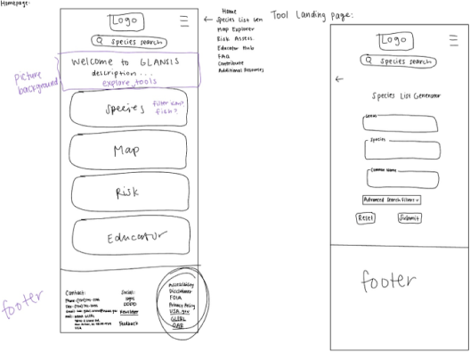
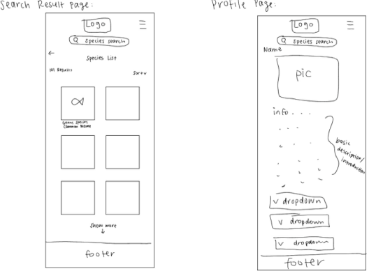
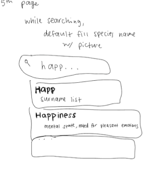

NOAA GLANSIS Website Redesign
Jump to final design
p.s. this was my first design project!
ROLE
CLIENT
DURATION
TOOLS
UX Designer,
Solo Project
Solo Project
National Oceanic
and Atmospheric Administration (NOAA)
and Atmospheric Administration (NOAA)
August 2023 to
December 2023
December 2023
Figma, Miro,
Notability
Notability
Overview
The GLANSIS Species List Generator uses filtering to create a list of invasive species within selected categories. My redesign of this tool addresses usability challenges by streamlining filters and navigation for resource managers, researchers, and the public. With simplified filters, clear icons, and more readable species profiles, the tool aims to facilitate users in efficiently managing invasive species in the Great Lakes and transform the user experience so that searching for a new species profile is easy, not frustrating.
Redesign the Species List Generator tool on the Great Lakes Aquatic Nonindigenous Species Information System (GLANSIS) website
Goal
Target Users
Great Lakes Researchers, Natural Resouce Managers, AIS decision-makers, and K-16 Educators
Design Process
Empathize
Define
Ideate
Assess
Test
Prototype
User Needs & Scenarios
Scenario 1
A local resource manager wants to know what invasive species are in their local management area that they should control.
Scenario 3
A state/federal manager is asked to approve a permit to import species.
Scenario 4
A researcher is planning a project to test a hypothesis about the food web of a particular habitat.
Scenario 5
A 4th grade student has been assigned to write a paper on local invasive species.
Scenario 2
A science teacher needs a lesson for their 8th grade students which is aligned to the next generation science standard on ecosystem. They would also like an age-appropriate video to accompany their lessons.
Informed by an interview with NOAA Representative Dr. Rochelle Sturtevant
Thirty million people rely on the Great Lakes for water. GLANSIS recorded 180 invasive species that harm biodiversity, water quality, and the economy. North America loses $26 billion per year due to invasive species. They introduce toxins and inhibit nutrient flow in the food chain. Resource managers use the Species List Generator on GLANSIS’s website in search of species to control in their area. However, the species profiles are cluttered, inaccessible text walls of data needed to enact regulations.
The Problem
The waterfall approach is ideal for Dr. Rochelle Sturtevant’s GLANSIS team due to its structured, systematic process, which aligns well with scientific methodology. Unlike agile, which requires a highly skilled, agile-literate team, or lean UX, which involves trial and error, the waterfall approach suits GLANSIS’s detailed project requirements and established goals. Dr. Sturtevant’s clarity on project scope minimizes timeline risks, and the method’s predefined steps, timelines, and budgets align with the team’s management style and organizational culture, ensuring a successful website redesign.
Why Waterfall for GLANSIS?
Brainstorming Sketches



Wireframes
First Mobile Prototype
Usability Testing Insights
Task 3: Exploring navigation options
Scenario: A first-time user explores the site beyond the species list generator.
Observations:
Quickly identified and used the hamburger menu to access other tools.
Did not attempt to return to the homepage, suggesting the menu effectively conveyed navigation.
Observations:
Quickly identified and used the hamburger menu to access other tools.
Did not attempt to return to the homepage, suggesting the menu effectively conveyed navigation.
Task 2: Finding the number of nonindigenous fish
Scenario: A student studying invasive species looks for the total recorded nonindigenous fish.
Observations:
Found the species list generator quickly.
Noticed default setting for nonindigenous species.
Located the submit button without confusion.
Took a few seconds to confirm 30 species recorded—successfully completed the task.
Observations:
Found the species list generator quickly.
Noticed default setting for nonindigenous species.
Located the submit button without confusion.
Took a few seconds to confirm 30 species recorded—successfully completed the task.
Task 1: Searching for the Alosa genus
Scenario: A fish expert searches for fish of the Alosa genus.
Observations:
Initially attempted to use the species list generator instead of the quick species search.
Quickly adjusted upon noticing the search icon.
Successfully typed "Alo" and navigated results with ease.
Observations:
Initially attempted to use the species list generator instead of the quick species search.
Quickly adjusted upon noticing the search icon.
Successfully typed "Alo" and navigated results with ease.
Updated Mobile Prototype
Final Desktop Design
Design Iterations & Key Decisions
3. Enhancing Navigation & Search
Challenge: The GLANSIS database is extensive, so navigation must be fast and intuitive.
Solutions:
Added key tools to both the header and hamburger menu for quick access.
Enabled search from anywhere on the site.
Implemented:
Auto-suggest for recently searched species.
Predictive text to complete species names quickly.
Following Fitts’s Law: Placed key navigation elements at the top for faster interaction.
Solutions:
Added key tools to both the header and hamburger menu for quick access.
Enabled search from anywhere on the site.
Implemented:
Auto-suggest for recently searched species.
Predictive text to complete species names quickly.
Following Fitts’s Law: Placed key navigation elements at the top for faster interaction.
2. Improving Access to Important Information
User Needs:
Some users only need the number of results.
Others need the newest additions to the database.
Changes:
Displayed the total number of results in the top left corner for easy access.
Removed sort options from the List Generator Page to reduce clutter.
Defaulted sorting to newest-to-oldest on the List Page for quick access to recent data.
Kept additional sorting/filtering options on the List Page for further refinement.
Reduced cognitive load by ensuring the most relevant info is visible at a glance.
Some users only need the number of results.
Others need the newest additions to the database.
Changes:
Displayed the total number of results in the top left corner for easy access.
Removed sort options from the List Generator Page to reduce clutter.
Defaulted sorting to newest-to-oldest on the List Page for quick access to recent data.
Kept additional sorting/filtering options on the List Page for further refinement.
Reduced cognitive load by ensuring the most relevant info is visible at a glance.
1. Eliminating Common Pitfalls on the List Generator Page
Problem: The List Generator Page has too many options, causing confusion.
Solution:
Prioritized the two most commonly used filters:
Species Category
Lake (HUC)
Moved less-used filters (e.g., "Group" and "Status") into Advanced Search to prevent misuse.
Added information icons next to filters to clarify terminology and provide help.
Solution:
Prioritized the two most commonly used filters:
Species Category
Lake (HUC)
Moved less-used filters (e.g., "Group" and "Status") into Advanced Search to prevent misuse.
Added information icons next to filters to clarify terminology and provide help.